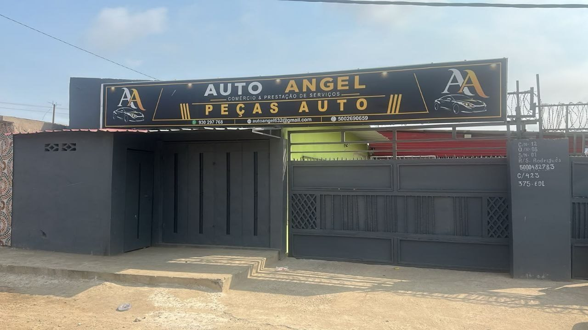

Rua Machado Saldanha, Luanda
AUTO ANGEL
O seu ponto de referência automóvel em Luanda — veículos, peças e atendimento direto, todos os dias da semana.
Veículos em destaque
Catálogo atualizado diretamente pela Auto Angel.
A carregar veículos...
Peças & acessórios automóveis
Vendemos peças para o seu veículo — faróis, baterias, pneus, peças de motor e outros componentes.
A carregar peças...
Não encontrou a peça que precisa? Fale connosco pelo WhatsApp.
Novidades & publicações
Conteúdos e informações partilhadas pela Auto Angel.
A carregar publicações...
Sobre a Auto Angel
A Auto Angel presta atendimento automóvel em Luanda, Angola, com veículos e peças disponíveis para consulta e contacto direto através de WhatsApp, chat privado ou ligação.
Falar com a Auto Angel
Escolha a forma de contacto mais conveniente.
Morada
Rua Machado Saldanha, Luanda, Angola
Horário
Segunda a Domingo, 07:00–17:00